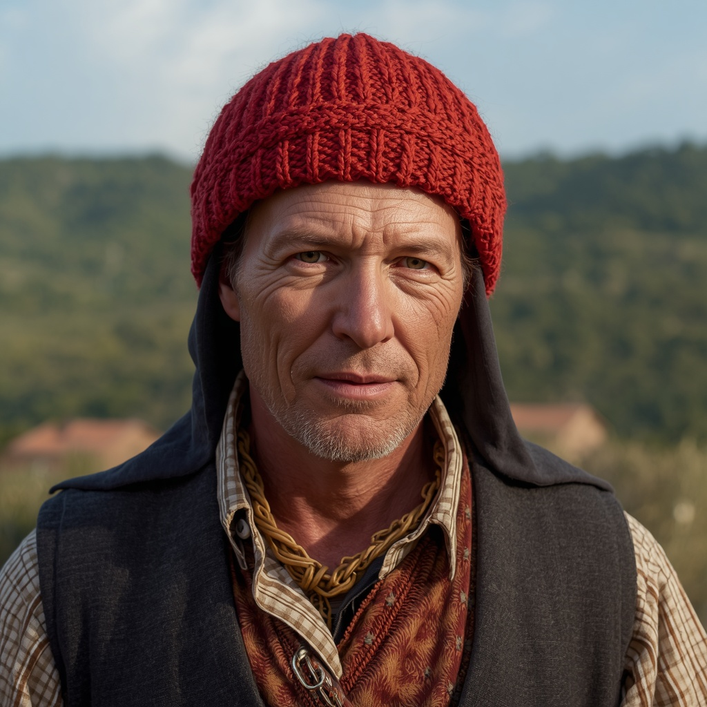

🧑🤝🧑 世界の民族・人びと
People of the World。国境を越えて暮らす人びとを、地域ごとに紹介します。伝統だけでなく、今の暮らしも一緒に。

カタルーニャ人
🗣 使用言語
カタルーニャ語、スペイン語(カスティーリャ語)
👥 人口の目安
約900万人(カタルーニャ州に約800万人)
👘 伝統衣装
赤や紫の毛織りの長い帽子「バレティーナ」が男性の伝統的な装いとして知られ、女性は「レット」と呼ばれる髪飾りの網を用いた。履物には麻縄底の「エスパルデニェス」が使われる。
🏠 住居
「マシア」と呼ばれる、広い土地を持つ大家族向けの農家住宅がカタルーニャの田園地帯を象徴する住居形式である。
🍲 食文化
オリーブオイルを多用する地中海式の食事が基本で、トマトを塗ったパン「パン・アム・トマケット」や、カタルーニャ風ソーセージ「エンボティッツ」などが親しまれている。
🎵 音楽・踊り
円になって手をつなぎ踊る民族舞踊「サルダーナ」が代表的な伝統舞踊で、専用の楽団「コブラ」による演奏を伴う。
🎉 行事・祭り
人が積み重なって塔を作る伝統行事「カステイ(人間の塔)」は1712年以来続き、ユネスコ無形文化遺産にも登録されている。4月23日の「サン・ジョルディの日」には本とバラを贈り合う習慣がある。
🙏 信仰・価値観
歴史的にはカトリックが中心であったが、現在は世俗化が進み、無宗教・不可知論者の割合も高まっている。
📜 歴史
ローマ時代にルーツを持ち、中世にはバルセロナ伯領やアラゴン連合王国の一部として繁栄したが、1714年のバルセロナ陥落により独自の政治的自治を失った。20世紀にはスペイン第二共和政のもとで自治が一時回復した。
🏙 現代の暮らし
バルセロナを中心に南欧有数の豊かな経済圏を形成しており、観光業や工業、国際的な人の往来が盛んな地域として発展している。
🇯🇵 日本との関係
建築家ガウディの作品を紹介する「ガウディとサグラダ・ファミリア展」が東京国立近代美術館をはじめ日本各地で開催されているほか、日本人彫刻家・外尾悦郎氏がサグラダ・ファミリアの建設に30年以上携わっていることでも知られる。
🌍 関連する国

出典: https://en.wikipedia.org/wiki/Catalans(2026-09-01時点) / https://www.sagawa-artmuseum.or.jp/plan/2023/07/post-140.html(2026-09-01時点) / https://www.veltra.com/jp/yokka/article/sagradafamilia-heritage/(2026-09-01時点)